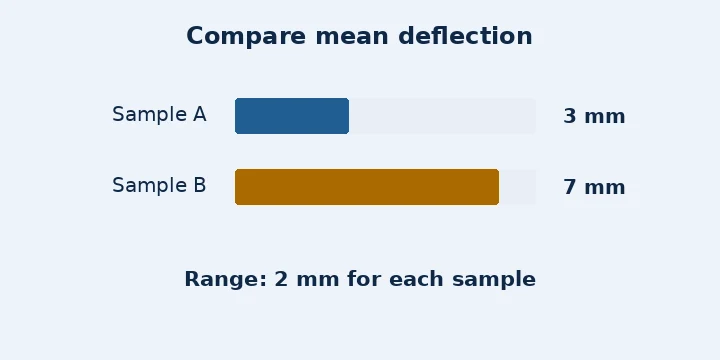

Analyzing Test Results
45 minutes · 10 points
Today’s Goal
Use mean deflection to recommend a material for a ride support.
Learn and see a demonstration (10 min), work (30 min), then submit and clean up (5 min).
Learn the Concept
The mean is the total divided by the number of measurements. The range is the largest value minus the smallest. Range shows how spread out repeated measurements are. Under matched test conditions a smaller mean deflection favors a support that needs to bend less. A large spread is a reason to check the setup before trusting a small difference.
Worked Example


- Sample A
- Trials: 2 and 4 mm · Mean: 3 mm · Range: 2 mm
- Sample B
- Trials: 6 and 8 mm · Mean: 7 mm · Range: 2 mm
- Decision
- Choose A if the support needs to bend less under the same load.
What to Do
Safety: Use the recorded data. Ask before repeating a load test.
- Use your 4.3 measurements or the class data for two samples.
- Calculate the mean and range for each sample.
- Recommend one material on stiffness and name one limit of the comparison.
What to Submit
One calculation note showing two means and two ranges in mm, plus a two-sentence recommendation with one limitation.
Submit one file and include your name. Turn it in through Google Classroom for Lesson 4.4.
Check Your Work
Do all four answers include units, and is your recommendation based on a matched setup rather than the material name alone?
10-point rubric
- 4 points · Completion. Include all requested parts of today’s submission.
- 4 points · Engineering accuracy. Use correct concepts and labels. Support your result or decision with the evidence requested.
- 2 points · Clarity. Make the evidence readable and include the required name or team names.
Finish the practice check to mark your work ready.